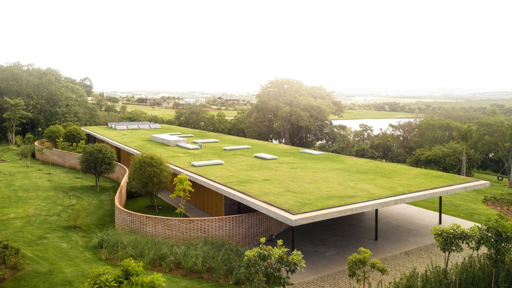
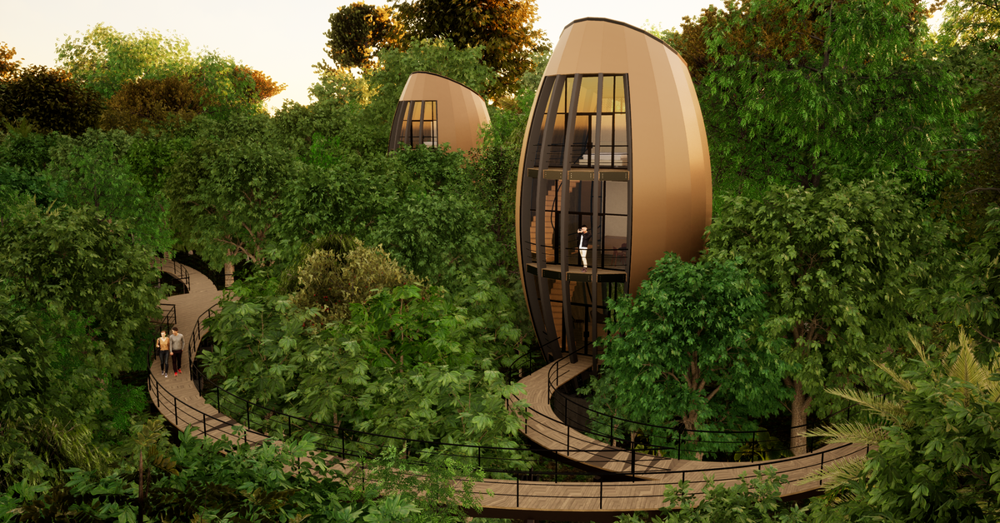
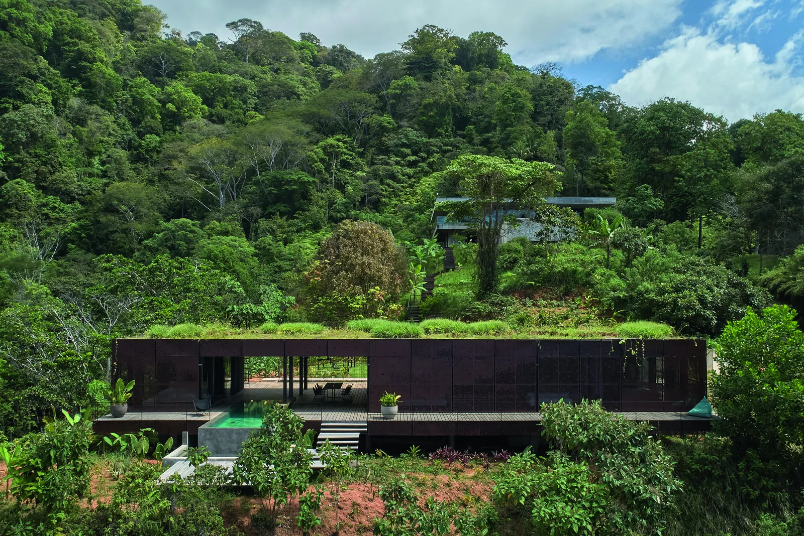
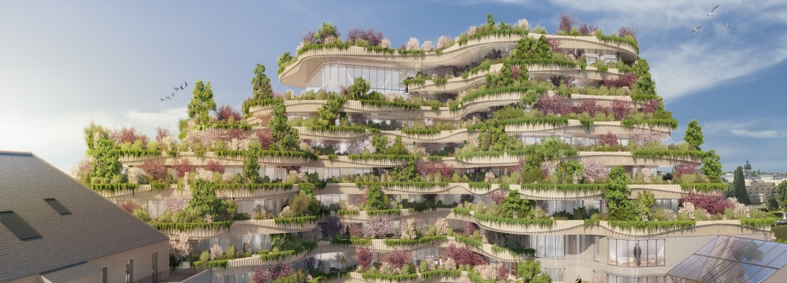
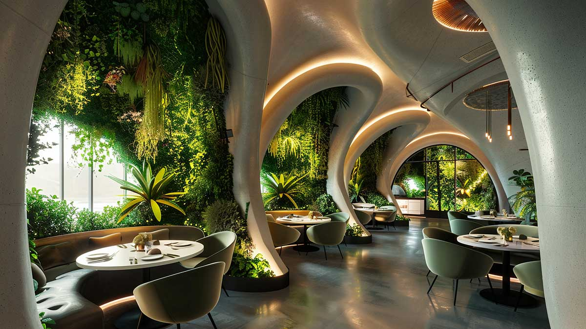
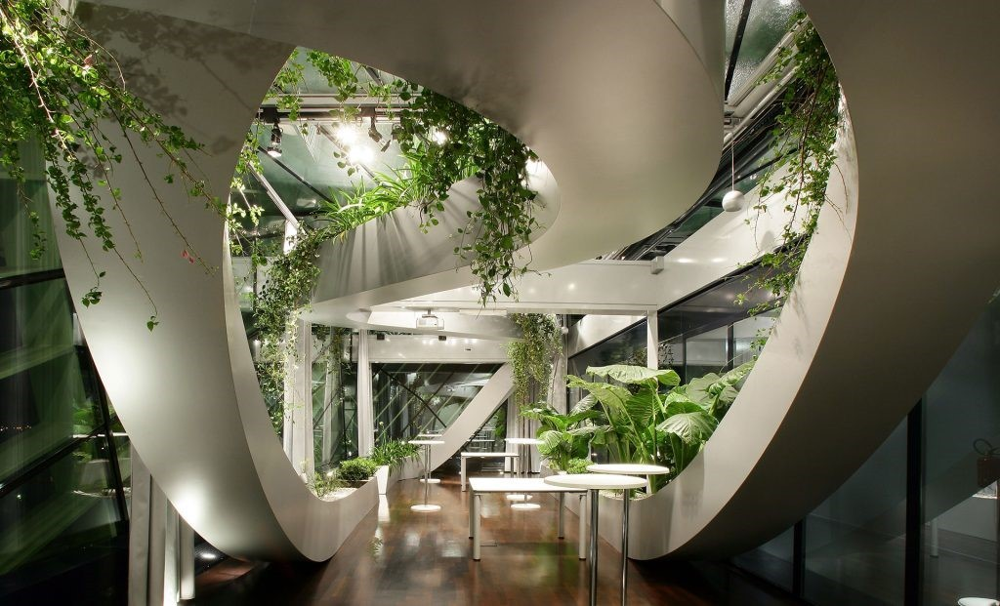

La Naturaleza como Modelo para la Innovación
En la arquitectura moderna, la naturaleza proporciona más que inspiración.



Arquitectura para el Futuro
Difuminando las Líneas entre el Interior y el Exterior
La línea costera es una metáfora de la transición fluida entre los entornos construidos y los paisajes abiertos. Los edificios modernos, a través del uso de fachadas de vidrio, terrazas abiertas y materiales naturales, disuelven los límites entre lo interior y lo exterior. Estos principios de diseño fomentan una conexión con el medio ambiente, promoviendo el bienestar y la sostenibilidad.

